mr_ash_pen
Matthew Stephens
2020-05-15
Last updated: 2021-05-11
Checks: 7 0
Knit directory: misc/analysis/
This reproducible R Markdown analysis was created with workflowr (version 1.6.2). The Checks tab describes the reproducibility checks that were applied when the results were created. The Past versions tab lists the development history.
Great! Since the R Markdown file has been committed to the Git repository, you know the exact version of the code that produced these results.
Great job! The global environment was empty. Objects defined in the global environment can affect the analysis in your R Markdown file in unknown ways. For reproduciblity it’s best to always run the code in an empty environment.
The command set.seed(1) was run prior to running the code in the R Markdown file. Setting a seed ensures that any results that rely on randomness, e.g. subsampling or permutations, are reproducible.
Great job! Recording the operating system, R version, and package versions is critical for reproducibility.
Nice! There were no cached chunks for this analysis, so you can be confident that you successfully produced the results during this run.
Great job! Using relative paths to the files within your workflowr project makes it easier to run your code on other machines.
Great! You are using Git for version control. Tracking code development and connecting the code version to the results is critical for reproducibility.
The results in this page were generated with repository version f77f070. See the Past versions tab to see a history of the changes made to the R Markdown and HTML files.
Note that you need to be careful to ensure that all relevant files for the analysis have been committed to Git prior to generating the results (you can use wflow_publish or wflow_git_commit). workflowr only checks the R Markdown file, but you know if there are other scripts or data files that it depends on. Below is the status of the Git repository when the results were generated:
Ignored files:
Ignored: .DS_Store
Ignored: .Rhistory
Ignored: .Rproj.user/
Ignored: analysis/.RData
Ignored: analysis/.Rhistory
Ignored: analysis/ALStruct_cache/
Ignored: data/.Rhistory
Ignored: data/pbmc/
Untracked files:
Untracked: .dropbox
Untracked: Icon
Untracked: analysis/GHstan.Rmd
Untracked: analysis/GTEX-cogaps.Rmd
Untracked: analysis/PACS.Rmd
Untracked: analysis/Rplot.png
Untracked: analysis/SPCAvRP.rmd
Untracked: analysis/admm_02.Rmd
Untracked: analysis/admm_03.Rmd
Untracked: analysis/compare-transformed-models.Rmd
Untracked: analysis/cormotif.Rmd
Untracked: analysis/cp_ash.Rmd
Untracked: analysis/eQTL.perm.rand.pdf
Untracked: analysis/eb_prepilot.Rmd
Untracked: analysis/eb_var.Rmd
Untracked: analysis/ebpmf1.Rmd
Untracked: analysis/flash_test_tree.Rmd
Untracked: analysis/flash_tree.Rmd
Untracked: analysis/ieQTL.perm.rand.pdf
Untracked: analysis/lasso_em_03.Rmd
Untracked: analysis/m6amash.Rmd
Untracked: analysis/mash_bhat_z.Rmd
Untracked: analysis/mash_ieqtl_permutations.Rmd
Untracked: analysis/mixsqp.Rmd
Untracked: analysis/mr.ash_lasso_init.Rmd
Untracked: analysis/mr.mash.test.Rmd
Untracked: analysis/mr_ash_modular.Rmd
Untracked: analysis/mr_ash_parameterization.Rmd
Untracked: analysis/mr_ash_ridge.Rmd
Untracked: analysis/mv_gaussian_message_passing.Rmd
Untracked: analysis/nejm.Rmd
Untracked: analysis/nmf_bg.Rmd
Untracked: analysis/normal_conditional_on_r2.Rmd
Untracked: analysis/normalize.Rmd
Untracked: analysis/pbmc.Rmd
Untracked: analysis/poisson_transform.Rmd
Untracked: analysis/pseudodata.Rmd
Untracked: analysis/qrnotes.txt
Untracked: analysis/ridge_iterative_02.Rmd
Untracked: analysis/ridge_iterative_splitting.Rmd
Untracked: analysis/samps/
Untracked: analysis/sc_bimodal.Rmd
Untracked: analysis/shrinkage_comparisons_changepoints.Rmd
Untracked: analysis/susie_en.Rmd
Untracked: analysis/susie_z_investigate.Rmd
Untracked: analysis/svd-timing.Rmd
Untracked: analysis/temp.RDS
Untracked: analysis/temp.Rmd
Untracked: analysis/test-figure/
Untracked: analysis/test.Rmd
Untracked: analysis/test.Rpres
Untracked: analysis/test.md
Untracked: analysis/test_qr.R
Untracked: analysis/test_sparse.Rmd
Untracked: analysis/z.txt
Untracked: code/multivariate_testfuncs.R
Untracked: code/rqb.hacked.R
Untracked: data/4matthew/
Untracked: data/4matthew2/
Untracked: data/E-MTAB-2805.processed.1/
Untracked: data/ENSG00000156738.Sim_Y2.RDS
Untracked: data/GDS5363_full.soft.gz
Untracked: data/GSE41265_allGenesTPM.txt
Untracked: data/Muscle_Skeletal.ACTN3.pm1Mb.RDS
Untracked: data/Thyroid.FMO2.pm1Mb.RDS
Untracked: data/bmass.HaemgenRBC2016.MAF01.Vs2.MergedDataSources.200kRanSubset.ChrBPMAFMarkerZScores.vs1.txt.gz
Untracked: data/bmass.HaemgenRBC2016.Vs2.NewSNPs.ZScores.hclust.vs1.txt
Untracked: data/bmass.HaemgenRBC2016.Vs2.PreviousSNPs.ZScores.hclust.vs1.txt
Untracked: data/eb_prepilot/
Untracked: data/finemap_data/fmo2.sim/b.txt
Untracked: data/finemap_data/fmo2.sim/dap_out.txt
Untracked: data/finemap_data/fmo2.sim/dap_out2.txt
Untracked: data/finemap_data/fmo2.sim/dap_out2_snp.txt
Untracked: data/finemap_data/fmo2.sim/dap_out_snp.txt
Untracked: data/finemap_data/fmo2.sim/data
Untracked: data/finemap_data/fmo2.sim/fmo2.sim.config
Untracked: data/finemap_data/fmo2.sim/fmo2.sim.k
Untracked: data/finemap_data/fmo2.sim/fmo2.sim.k4.config
Untracked: data/finemap_data/fmo2.sim/fmo2.sim.k4.snp
Untracked: data/finemap_data/fmo2.sim/fmo2.sim.ld
Untracked: data/finemap_data/fmo2.sim/fmo2.sim.snp
Untracked: data/finemap_data/fmo2.sim/fmo2.sim.z
Untracked: data/finemap_data/fmo2.sim/pos.txt
Untracked: data/logm.csv
Untracked: data/m.cd.RDS
Untracked: data/m.cdu.old.RDS
Untracked: data/m.new.cd.RDS
Untracked: data/m.old.cd.RDS
Untracked: data/mainbib.bib.old
Untracked: data/mat.csv
Untracked: data/mat.txt
Untracked: data/mat_new.csv
Untracked: data/matrix_lik.rds
Untracked: data/paintor_data/
Untracked: data/running_data_chris.csv
Untracked: data/running_data_matthew.csv
Untracked: data/temp.txt
Untracked: data/y.txt
Untracked: data/y_f.txt
Untracked: data/zscore_jointLCLs_m6AQTLs_susie_eQTLpruned.rds
Untracked: data/zscore_jointLCLs_random.rds
Untracked: explore_udi.R
Untracked: output/fit.k10.rds
Untracked: output/fit.varbvs.RDS
Untracked: output/glmnet.fit.RDS
Untracked: output/test.bv.txt
Untracked: output/test.gamma.txt
Untracked: output/test.hyp.txt
Untracked: output/test.log.txt
Untracked: output/test.param.txt
Untracked: output/test2.bv.txt
Untracked: output/test2.gamma.txt
Untracked: output/test2.hyp.txt
Untracked: output/test2.log.txt
Untracked: output/test2.param.txt
Untracked: output/test3.bv.txt
Untracked: output/test3.gamma.txt
Untracked: output/test3.hyp.txt
Untracked: output/test3.log.txt
Untracked: output/test3.param.txt
Untracked: output/test4.bv.txt
Untracked: output/test4.gamma.txt
Untracked: output/test4.hyp.txt
Untracked: output/test4.log.txt
Untracked: output/test4.param.txt
Untracked: output/test5.bv.txt
Untracked: output/test5.gamma.txt
Untracked: output/test5.hyp.txt
Untracked: output/test5.log.txt
Untracked: output/test5.param.txt
Unstaged changes:
Modified: analysis/ash_delta_operator.Rmd
Modified: analysis/ash_pois_bcell.Rmd
Modified: analysis/lasso_em.Rmd
Modified: analysis/minque.Rmd
Modified: analysis/mr_missing_data.Rmd
Modified: analysis/ridge_admm.Rmd
Modified: analysis/vamp_01.Rmd
Note that any generated files, e.g. HTML, png, CSS, etc., are not included in this status report because it is ok for generated content to have uncommitted changes.
These are the previous versions of the repository in which changes were made to the R Markdown (analysis/mr_ash_pen.Rmd) and HTML (docs/mr_ash_pen.html) files. If you’ve configured a remote Git repository (see ?wflow_git_remote), click on the hyperlinks in the table below to view the files as they were in that past version.
| File | Version | Author | Date | Message |
|---|---|---|---|---|
| Rmd | f77f070 | Matthew Stephens | 2021-05-11 | wflow_publish(“analysis/mr_ash_pen.Rmd”) |
Introduction
The idea here is to code up mr.ash as a penalized method, compute gradients etc.
The obvious way to write the problem is \[\min_b (1/2\sigma^2) ||y - Xb||_2 + \sum_j \rho_{g,s_j}(b_j)\] Where the penalty \(\rho\) depends on the prior (\(g\)) and the \(s_j^2=\sigma^2/(x_j'x_j)\).
However, the penalty \(\rho(b)\) is inconvenient to compute because it involves the inverse of \(S\) (the posterior mean shrinkage function) which is not analytically available to us (at least in our current state of knowledge).
A simple idea is to rewrite the problem as: \[\min_b (1/2\sigma^2) ||y - XS(b)||_2 + \rho(S(b))\] Here \(S(b)\) means apply \(S\) element-wise to the vector \(b\). Because \(S\) is invertible there is no loss of generality in writing the optimization this way. Furthermore, \[h(b):=\rho(S(b))\] is easy to compute:
\[h(b) = -l(b) +0.5 l'(b) - 0.5 \log (2\pi s^2)\] where \(l(b)\) is the marginal log-likelihood function under the normal means model. That is \(l(b) = \log(f(b))\) where \[f(b) := \sum_k \pi_k N(b; 0, \sigma_k^2+s^2).\]
Code for fundamental functions
Everything can be written in terms of the marginal likelihood \(f\) and its first two derivatives, so we code those up first. I have not been careful about numerical issues here.. will need to deal with those at some point.
#y,s are vectors of length n
#probs, sigma are vectors of length K
# returns an n-vector of "marginal likelihoods" under mixture prior
f = function(b, s, probs, sigma){
if(length(s)==1){s = rep(s,length(b))}
sigmamat <- outer(s^2, sigma^2, `+`) # n time k
llik_mat <- -0.5 * (log(sigmamat) + b^2 / sigmamat)
#llik_norms <- apply(llik_mat, 1, max)
#L_mat <- exp(llik_mat - llik_norms)
L_mat <- exp(llik_mat)
return((1/sqrt(2*pi)) * as.vector(colSums(probs * t(L_mat))))
}
#returns a vector of the derivative of f evaluated at each element of y
f_deriv = function(b, s, probs, sigma){
if(length(s)==1){s = rep(s,length(b))}
sigmamat <- outer(s^2, sigma^2, `+`) # n time k
llik_mat <- -(3/2) * log(sigmamat) -0.5* b^2 / sigmamat
#llik_norms <- apply(llik_mat, 1, max)
#L_mat <- exp(llik_mat - llik_norms)
L_mat <- exp(llik_mat)
return((-b/sqrt(2*pi)) * as.vector(colSums(probs * t(L_mat))))
}
# returns f_deriv/b ok even if b=0
f_deriv_over_b = function(b, s, probs, sigma){
if(length(s)==1){s = rep(s,length(b))}
sigmamat <- outer(s^2, sigma^2, `+`) # n time k
llik_mat <- -(3/2) * log(sigmamat) -0.5* b^2 / sigmamat
#llik_norms <- apply(llik_mat, 1, max)
#L_mat <- exp(llik_mat - llik_norms)
L_mat <- exp(llik_mat)
return((-1/sqrt(2*pi)) * as.vector(colSums(probs * t(L_mat))))
}
#returns a vector of the second derivatives of f evaluated at each element of y
f_deriv2 = function(b, s, probs, sigma){
if(length(s)==1){s = rep(s,length(b))}
sigmamat <- outer(s^2, sigma^2, `+`) # n time k
llik_mat <- -(5/2) * log(sigmamat) -0.5* b^2 / sigmamat
#llik_norms <- apply(llik_mat, 1, max)
#L_mat <- exp(llik_mat - llik_norms)
L_mat <- exp(llik_mat)
return((b^2/sqrt(2*pi)) * as.vector(colSums(probs * t(L_mat)))+ f_deriv_over_b(b,s,probs,sigma))
}Check the derivative code numerically:
n = 100
k = 5
b = rnorm(n)
probs = rep(1/k,k)
sigma = c(0,1,2,3,4,5)
eps=1e-5
plot((f(b+eps,1,probs,sigma)-f(b,1,probs,sigma))/eps, f_deriv(b,1,probs,sigma),xlab="numerical 1st derivative", ylab="analytic 1st derivative")
abline(a=0,b=1)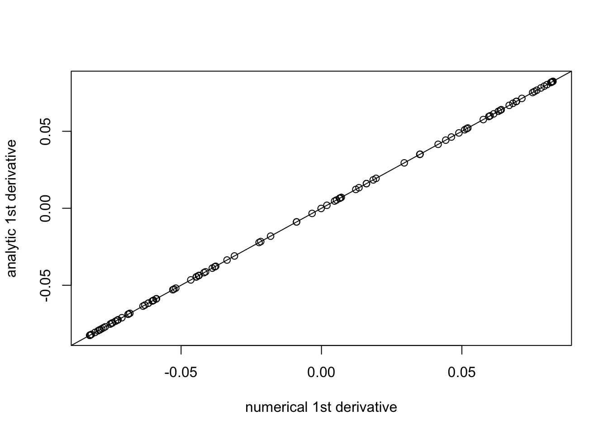
plot((f_deriv(b+eps,1,probs,sigma)-f_deriv(b,1,probs,sigma))/eps, f_deriv2(b,1,probs,sigma), xlab="numerical 2nd derivative", ylab="analytic 2nd derivative")
abline(a=0,b=1)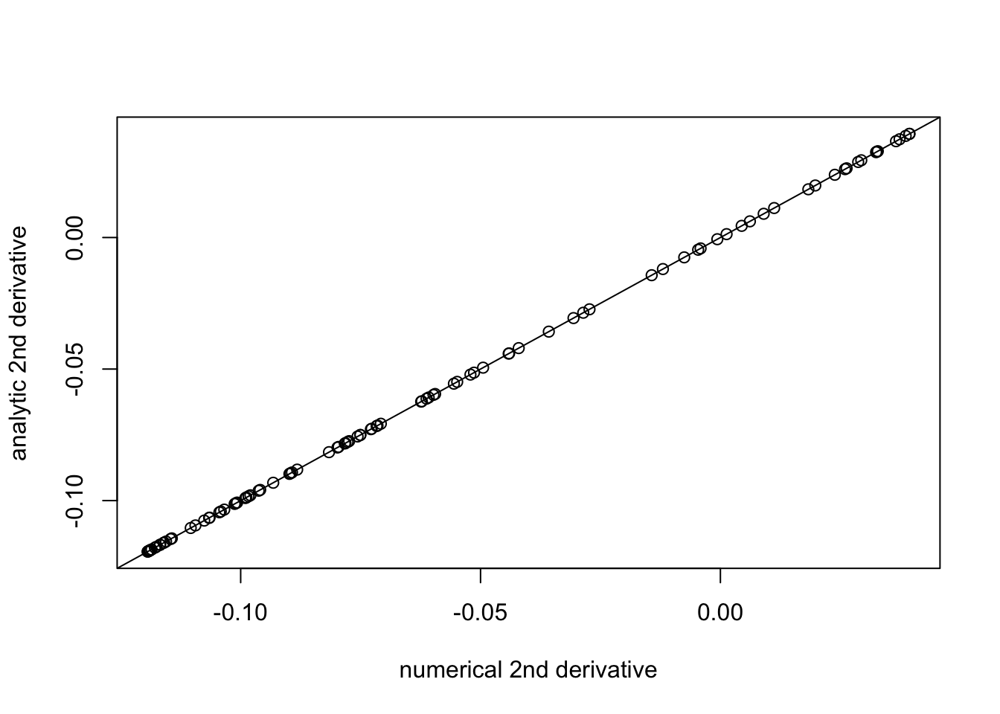
Now we have \[l(b) = \log f(b)\], \[l'(b) = f'(b)/f(b)\], \[l''(b) = (f(b)f''(b)-f'(b)^2)/f(b)^2\],
l = function(b, s, probs, sigma){
log(f(b,s,probs,sigma))
}
l_deriv = function(b, s, probs, sigma){
f_deriv(b,s,probs,sigma)/f(b,s,probs,sigma)
}
l_deriv2 = function(b, s, probs, sigma){
((f_deriv2(b,s,probs,sigma)*f(b,s,probs,sigma))-f_deriv(b,s,probs,sigma)^2)/f(b,s,probs,sigma)^2
}
plot((l_deriv(b+eps,1,probs,sigma)-l_deriv(b,1,probs,sigma))/eps, l_deriv2(b,1,probs,sigma), xlab="numerical 2nd derivative", ylab="analytic 2nd derivative")
abline(a=0,b=1)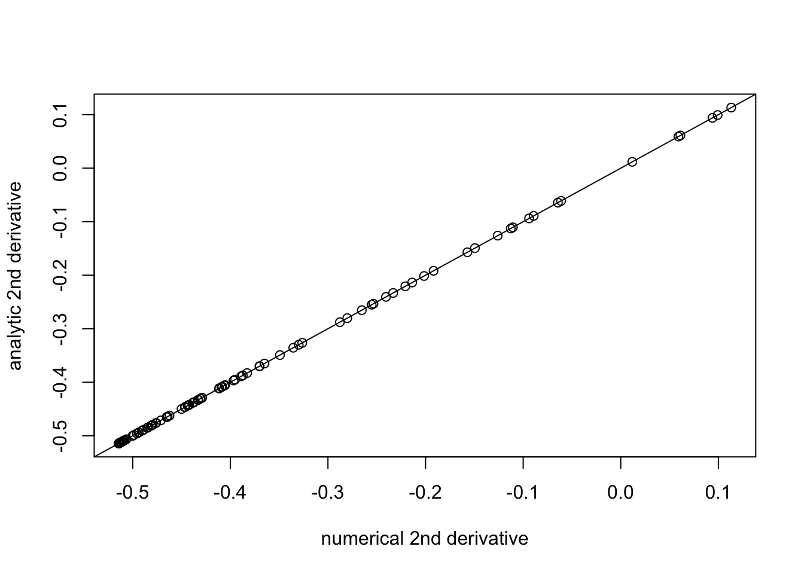
And with these in place we can compute the shrinkage function and penalty function \(h\), using \[h(b) = -l(b) + 0.5l'(b)-0.5\log(2\pi s^2)\] \[S(b) = b+ s^2l'(b)\] \[S'(b) = 1 + s^2 l''(b)\].
S = function(b, s, probs, sigma){
return(b + s^2 * l_deriv(b,s,probs,sigma))
}
S_deriv = function(b, s, probs, sigma){
return(1+ s^2 * l_deriv2(b,s,probs,sigma))
}
h = function(b,s,probs,sigma){
return(-l(b,s,probs,sigma) + 0.5* l_deriv(b,s,probs,sigma)-0.5*log(2*pi*s^2))
}
h_deriv = function(b,s,probs,sigma){
return(-l_deriv(b,s,probs,sigma) + 0.5*l_deriv2(b,s,probs,sigma))
}
plot((h(b+eps,1,probs,sigma)-h(b,1,probs,sigma))/eps, h_deriv(b,1,probs,sigma), xlab="numerical 1st derivative", ylab="analytic 1st derivative")
abline(a=0,b=1)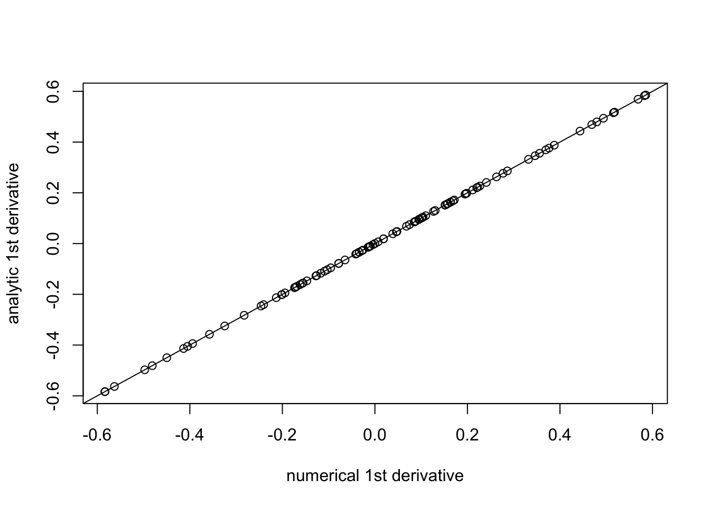
Inverting S by Newton-Raphson method
One thing we might want to do is invert S. We don’t have analytic form for this, but we can use the Newton-Raphson method to solve \(S(x)=y\). The iterates would be \[x \leftarrow x - (S(x)-y)/S'(x) \]
y = seq(-10,10,length=100)
x=y
par(mfrow=c(5,5))
par(mar=rep(1.5,4))
probs = rep(0.5,2)
sigma = c(0,5)
for(i in 1:25){
plot(S(x,1,probs,sigma),y)
x = x-(S(x,1,probs,sigma)-y)/S_deriv(x,1,probs,sigma)
}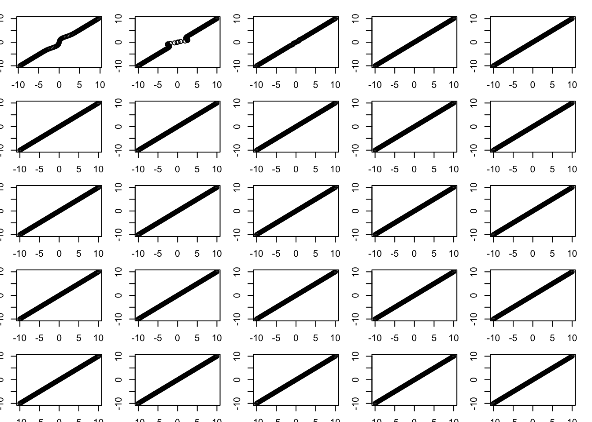
plot(S(x,1,probs,sigma),y)
plot(x,y)
Optimizing the objective
obj = function(b, y, X, residual_var, probs, sigma){
d = colSums(X^2)
s = sqrt(residual_var/d)
r = y - X %*% S(b,s,probs,sigma)
return(0.5*(1/residual_var)*sum(r^2) + sum(h(b,s,probs,sigma)))
}
obj_grad = function(b, y, X, residual_var, probs, sigma){
d = colSums(X^2)
s = sqrt(residual_var/d)
r = y - X %*% S(b,s,probs,sigma)
return((-1/residual_var)*(t(r) %*% X) * S_deriv(b,s,probs,sigma) + h_deriv(b,s,probs,sigma))
}Try it out on simple simulation:
n = 100
p = 20
X = matrix(rnorm(n*p),nrow=n)
norm = colSums(X^2)
X = t(t(X)/sqrt(norm))
b = rnorm(p)
y = X %*% b + rnorm(n)
(obj(b,y,X,1,probs,sigma)-obj(b+c(eps,rep(0,p-1)),y,X,1,probs,sigma))/eps[1] 0.7779563-obj_grad(b,y,X,1,probs,sigma)[1][1] 0.7779554b.cg.warm = optim(b,obj,gr=obj_grad,method="CG",y=y,X=X,residual_var=1, probs=probs,sigma=sigma)
b.cg.null = optim(rep(0,p),obj,gr=obj_grad,method="CG",y=y,X=X,residual_var=1, probs=probs,sigma=sigma)
b.bfgs.warm = optim(b,obj,gr=obj_grad,method="BFGS",y=y,X=X,residual_var=1, probs=probs,sigma=sigma)
b.bfgs.null = optim(rep(0,p),obj,gr=obj_grad,method="BFGS",y=y,X=X,residual_var=1, probs=probs,sigma=sigma)
b.cg.warm$value[1] 76.12059b.cg.null$value[1] 76.73097b.bfgs.warm$value[1] 76.12059b.bfgs.null$value[1] 76.73097plot(S(b.cg.warm$par,1,probs,sigma),b)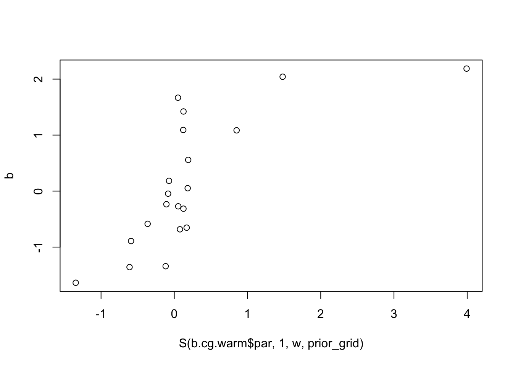
Some comments from Mihai: BFGS stores a dense approximation to the Hessian, so won’t be good for big problems. However, “limited”-BFGS might work (L-BFGS?). CG needs preconditioning in general; BFGS does not because it is computing an approximation to the Hessian.
Thoughts from me: maybe we can compute the Hessian directly and efficiently when X is, say, the trend filtering matrix.
Another question: if we write h as a function of pi, is h(pi) convex? Is rho(pi) convex?
Trendfiltering
set.seed(100)
sd = 1
n = 100
p = n
X = matrix(0,nrow=n,ncol=n)
for(i in 1:n){
X[i:n,i] = 1:(n-i+1)
}
btrue = rep(0,n)
btrue[40] = 8
btrue[41] = -8
Y = X %*% btrue + sd*rnorm(n)norm = colSums(X^2)
X = t(t(X)/sqrt(norm))
btrue = btrue * sqrt(norm)
plot(Y)
lines(X %*% btrue)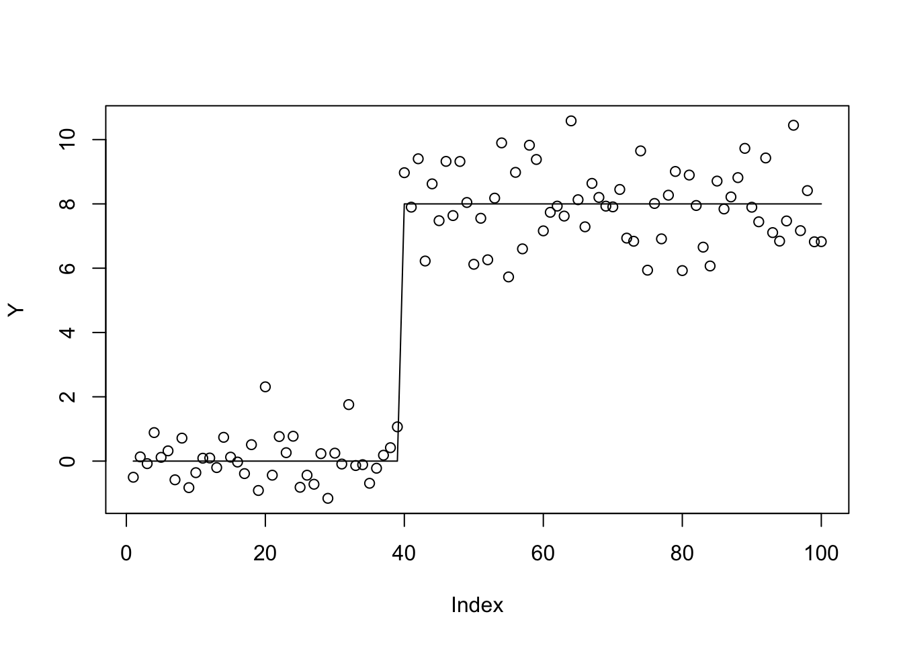
sigma=c(0,10,100,1000)
probs=rep(1/4,4)
b.cg.null = optim(rep(0,p),obj,gr=obj_grad,method="CG",y=Y,X=X,residual_var=1, probs=probs,sigma=sigma,control=list(maxit=1000))
b.bfgs.null = optim(rep(0,p),obj,gr=obj_grad,method="BFGS",y=Y,X=X,residual_var=1, probs=probs,sigma=sigma,control=list(maxit=1000))
plot(Y)
lines(X %*% S(b.cg.null$par,1,probs,sigma))
lines(X %*% S(b.bfgs.null$par,1,probs,sigma))
b.cg.warm = optim(btrue,obj,gr=obj_grad,method="CG",y=Y,X=X,residual_var=1, probs=probs,sigma=sigma)
b.bfgs.warm = optim(btrue,obj,gr=obj_grad,method="BFGS",y=Y,X=X,residual_var=1, probs=probs,sigma=sigma)
lines(X %*% S(b.cg.warm$par,1,probs,sigma))
lines(X %*% S(b.bfgs.warm$par,1,probs,sigma),col=2)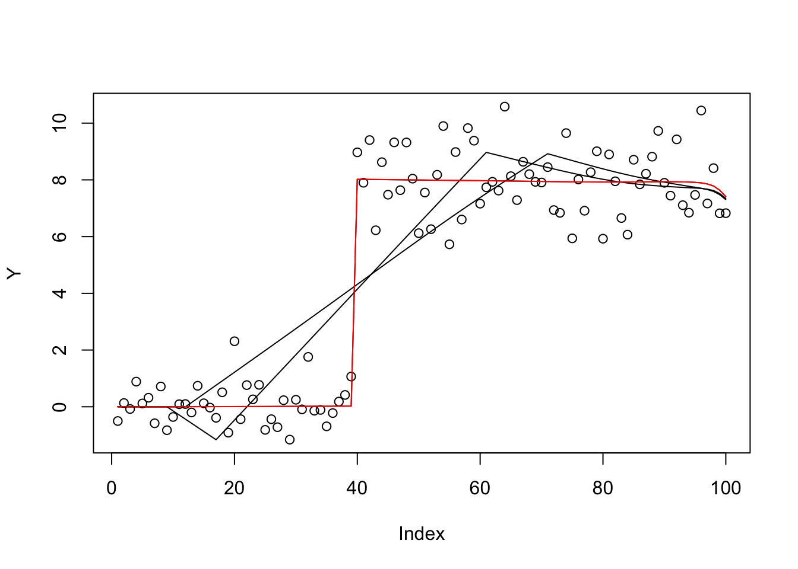
b.cg.warm$value[1] 188.198b.cg.null$value[1] 292.0316b.bfgs.warm$value[1] 188.198b.bfgs.null$value[1] 356.1298This case is ridge regression, so should be convex… try it out.
sigma=c(10,10)
probs=rep(1/2,2)
b.cg.null = optim(rep(0,p),obj,gr=obj_grad,method="CG",y=Y,X=X,residual_var=1, probs=probs,sigma=sigma,control=list(maxit=1000))
b.bfgs.null = optim(rep(0,p),obj,gr=obj_grad,method="BFGS",y=Y,X=X,residual_var=1, probs=probs,sigma=sigma,control=list(maxit=1000))
plot(Y)
lines(X %*% S(b.cg.null$par,1,probs,sigma))
lines(X %*% S(b.bfgs.null$par,1,probs,sigma))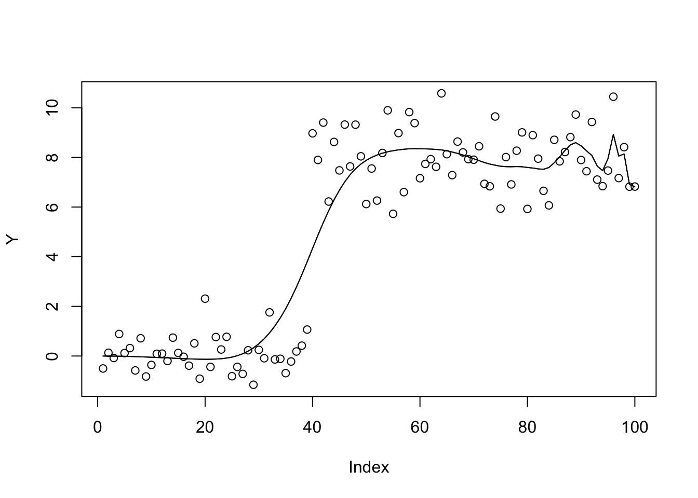
b.bfgs.null$value[1] 336.7858b.cg.null$value[1] 336.7858Try a prior with more overlapping components
sigma=seq(0,100,length=100)
probs=rep(1/100,100)
b.cg.null = optim(rep(0,p),obj,gr=obj_grad,method="CG",y=Y,X=X,residual_var=1, probs=probs,sigma=sigma,control=list(maxit=1000))
b.bfgs.null = optim(rep(0,p),obj,gr=obj_grad,method="BFGS",y=Y,X=X,residual_var=1, probs=probs,sigma=sigma,control=list(maxit=1000))
plot(Y)
lines(X %*% S(b.cg.null$par,1,probs,sigma))
lines(X %*% S(b.bfgs.null$par,1,probs,sigma))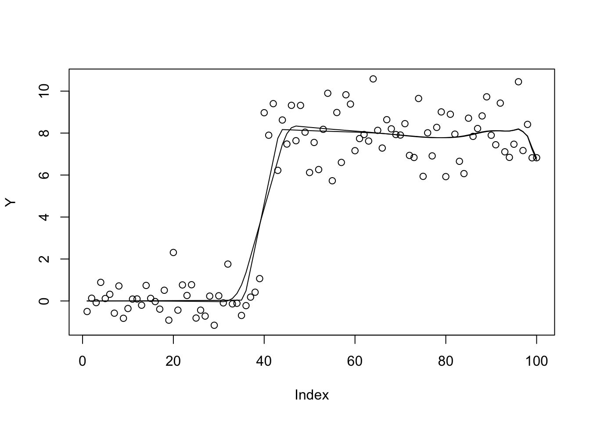
b.bfgs.null$value[1] 369.148b.cg.null$value[1] 382.8293And now revert to the sparser prior
sigma=c(0,10,100,1000)
probs=rep(1/4,4)
b.cg.null = optim(b.cg.null$par,obj,gr=obj_grad,method="CG",y=Y,X=X,residual_var=1, probs=probs,sigma=sigma,control=list(maxit=1000))
b.bfgs.null = optim(b.bfgs.null$par,obj,gr=obj_grad,method="BFGS",y=Y,X=X,residual_var=1, probs=probs,sigma=sigma,control=list(maxit=1000))
plot(Y)
lines(X %*% S(b.cg.null$par,1,probs,sigma))
lines(X %*% S(b.bfgs.null$par,1,probs,sigma))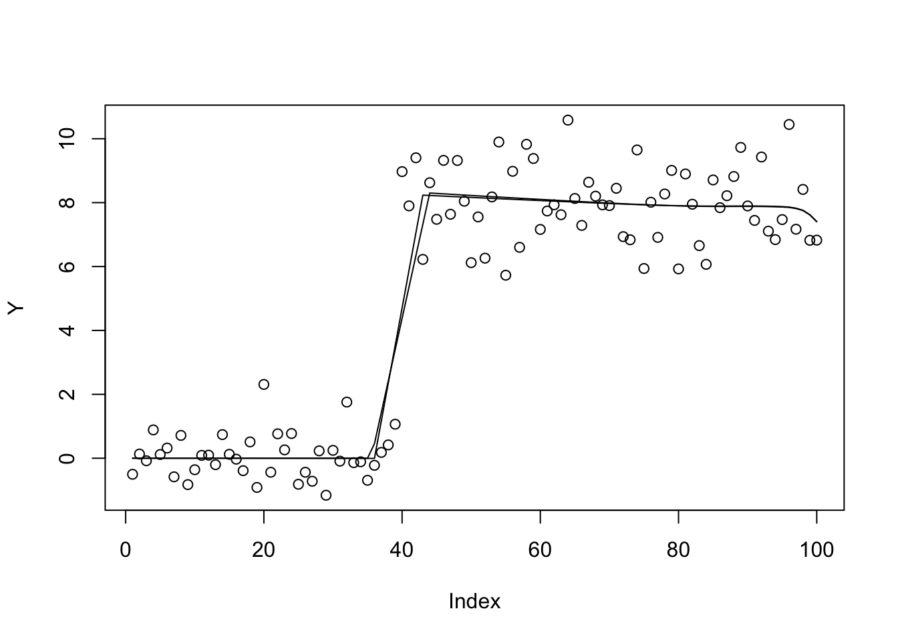
b.bfgs.null$value[1] 208.9475b.cg.null$value[1] 215.237bhat = chol2inv(chol(t(X) %*% X)) %*% t(X) %*% Y
plot(X %*% bhat)
lines(Y)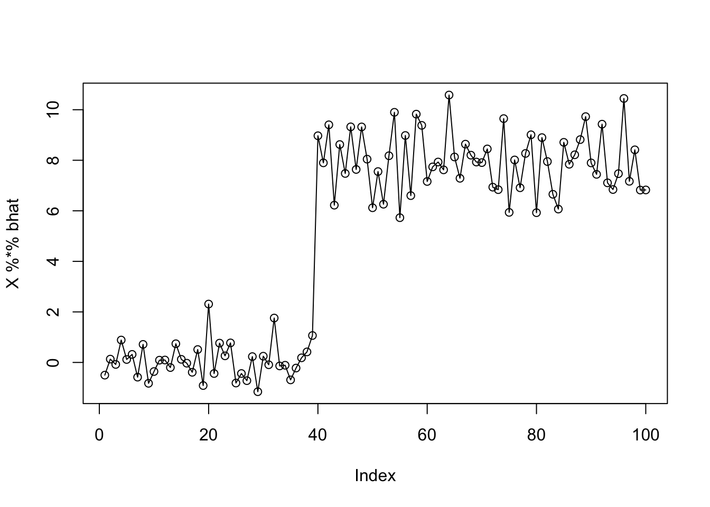
b.bfgs.bhat = optim(bhat,obj,gr=obj_grad,method="BFGS",y=Y,X=X,residual_var=1, probs=probs,sigma=sigma,control=list(maxit=10000))
b.bfgs.bhat$value[1] 275.2874plot(Y)
lines(X %*% S(as.vector(b.bfgs.null$par),1,probs,sigma))
lines(X %*% S(as.vector(b.bfgs.warm$par),1,probs,sigma),col=2)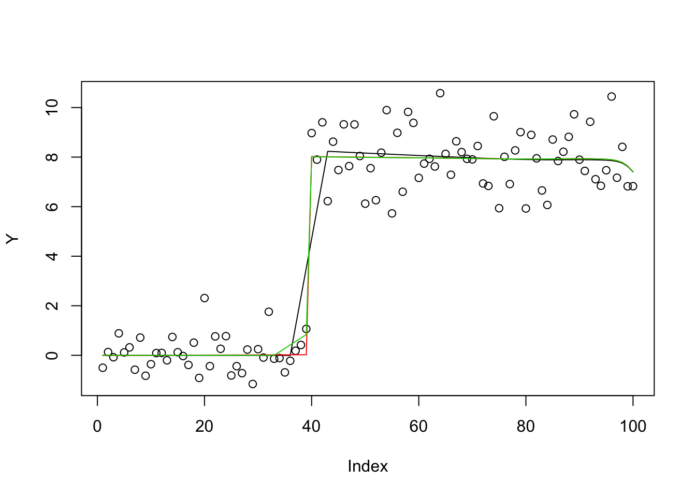
sessionInfo()R version 3.6.0 (2019-04-26)
Platform: x86_64-apple-darwin15.6.0 (64-bit)
Running under: macOS 10.16
Matrix products: default
BLAS: /Library/Frameworks/R.framework/Versions/3.6/Resources/lib/libRblas.0.dylib
LAPACK: /Library/Frameworks/R.framework/Versions/3.6/Resources/lib/libRlapack.dylib
locale:
[1] en_US.UTF-8/en_US.UTF-8/en_US.UTF-8/C/en_US.UTF-8/en_US.UTF-8
attached base packages:
[1] stats graphics grDevices utils datasets methods base
loaded via a namespace (and not attached):
[1] Rcpp_1.0.6 rstudioapi_0.13 whisker_0.4 knitr_1.29
[5] magrittr_1.5 workflowr_1.6.2 R6_2.4.1 rlang_0.4.10
[9] stringr_1.4.0 tools_3.6.0 xfun_0.16 git2r_0.27.1
[13] htmltools_0.5.0 ellipsis_0.3.1 yaml_2.2.1 digest_0.6.27
[17] rprojroot_1.3-2 tibble_3.0.4 lifecycle_1.0.0 crayon_1.3.4
[21] later_1.1.0.1 vctrs_0.3.4 fs_1.5.0 promises_1.1.1
[25] glue_1.4.2 evaluate_0.14 rmarkdown_2.3 stringi_1.4.6
[29] compiler_3.6.0 pillar_1.4.6 backports_1.1.10 httpuv_1.5.4
[33] pkgconfig_2.0.3